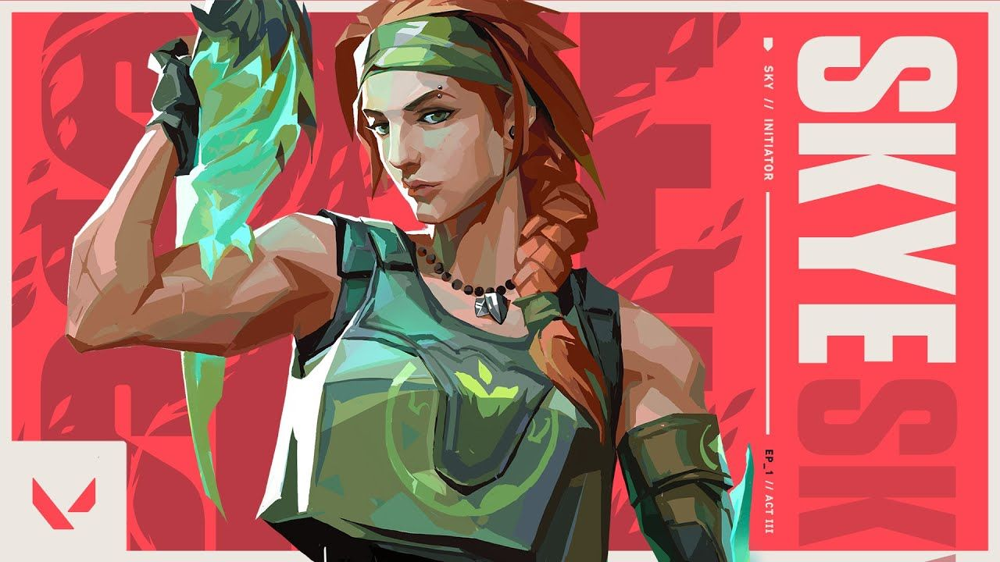

Ability 1(regrowth)-This ability is a heal similar to sage but u can heal all ur teamates at once if they are inside the healing radius,there is a green circle that denotes the radius.If u hold right click u heal,but u cannot heal urself.There is a bar on ur screen that denotes the amount of the heal u have.
Ability 2(trailblazer)-This ability is like sovas drone except it is moving on the ground.When u press the ability key,u play as the tiger that can move and jump,when u jump on an enemy,the enemy gets concussed and the tiger deals 30 damage,there is a bar on ur screen that shows the amount of time u play as the tiger.U can use this ability to scout an area or check corners and get early info.
Ability 3(guiding light)-This ability is a flash that can be controlled using ur mouse.When u press the left click the flash moves foward and press e to activate the flash.U can control the flash by holding left click and moving the mouse in the direction u want to move ur flash.A sound cue is made if an enemy is flashed.Ur teamates also get flashed.U can use this to get info and also flash the enemies as a sound is made if the enemy gets flashed.
Ability 4(seekers)-This ability is called seekers as skye releases 3 animal like creatures that can track 3 enemies if 3 enemies are left,otherwise only 1,2 seekers are released depending on the number of enemies.U can see on the map the movement of ur seekers.There is a voice line that tells that the enemies have been concussed,if u get hit by these seekers,u get concussed and ur vision gets blurred like when u get hit by omens paranoia,except the color is green.But these seekers are destructible.This can be used to enter a site as u can use these seekers to check thee areas that people camp and kill them easily.U can also use ur flash incase the people destroy the seekers.